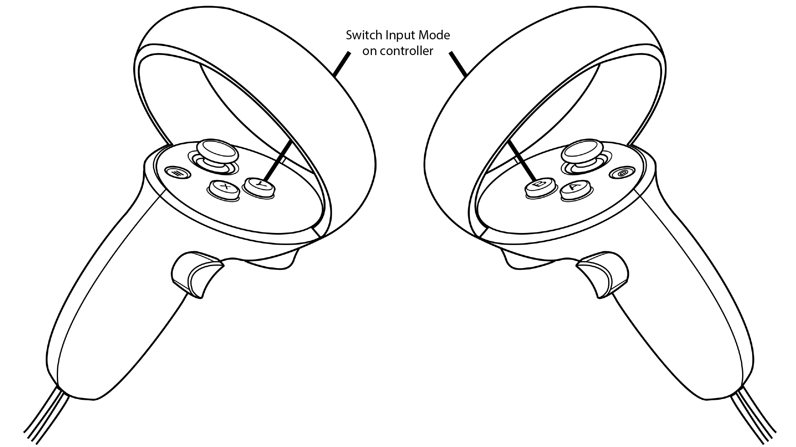
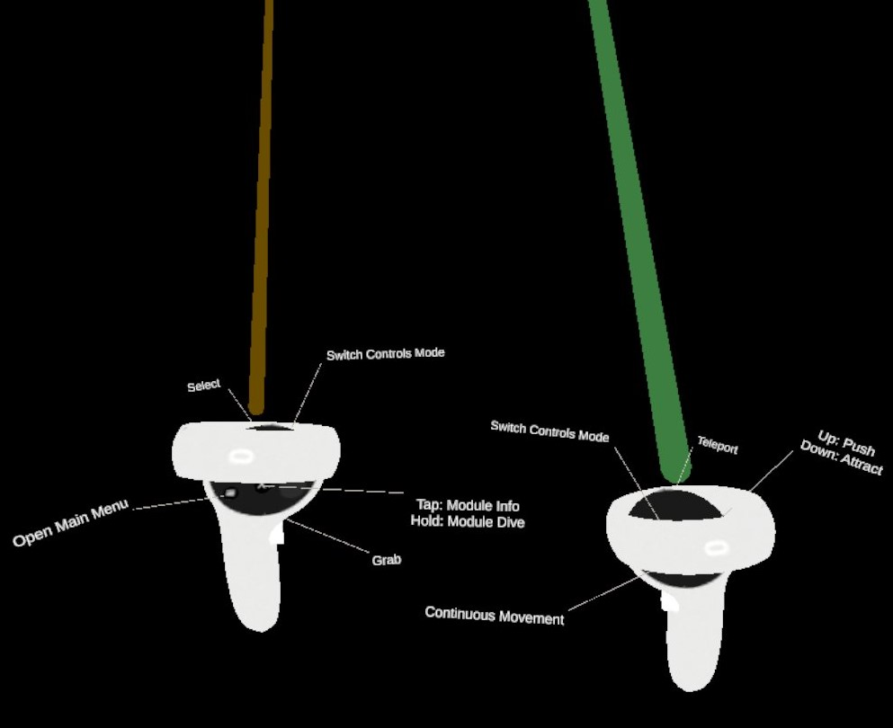

General
There are three sets of controls in ECellDive which can be used in either the left or the right controller. You can switch between a control set to another by pressing the Y Button on the left controller and the B Button on the right controller. By pressing the aforementioned buttons, the the controls will circle through Groups Controls-->Movement Controls-->Ray-based Interaction Controls on the corresponding controller.
When a user is dropped in the root Dive Scene, the left controller will use the Ray-based Interaction Controls and the right controller will use the Movement Controls. For each control set, the effect of the buttons are clearly visible in-app thanks to little tags attached to the 3D models of the controllers (see bellow).
